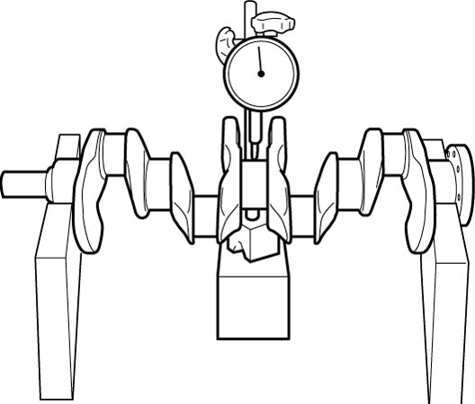
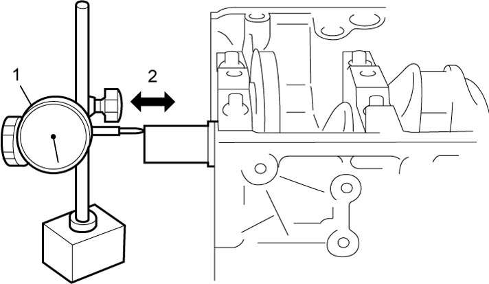
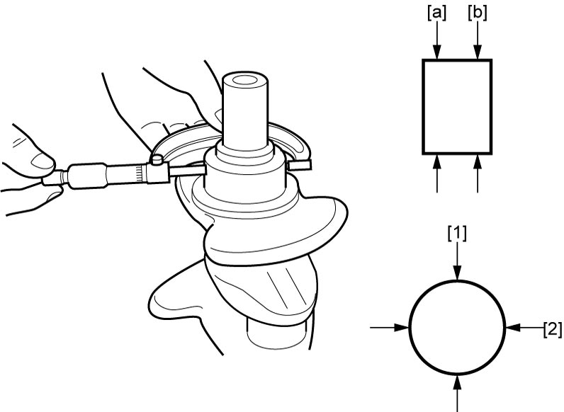

1D
| Crankshaft Inspection |
Crankshaft Runout
Using a dial gauge, measure runout at center journal. Rotate crankshaft slowly. If runout exceeds its limit, replace crankshaft.
Crankshaft runout
Limit: 0.02 mm (0.0008 in.)

 "Expand image")
Crankshaft Thrust Play
1)Assemble crankshaft, main bearings, thrust bearings and main bearing cap. 
2)Using dial gauge (1), measure crankshaft thrust play (2) as shown in figure.
If measured thrust play exceeds limit, replace thrust bearing with new one (standard size or oversize) to obtain standard thrust play.
Recheck crankshaft thrust play.

If measured thrust play exceeds limit, replace thrust bearing with new one (standard size or oversize) to obtain standard thrust play.
Recheck crankshaft thrust play.
Crankshaft thrust play
Standard: 0.11 – 0.31 mm (0.0044 – 0.0122 in.)
Limit: 0.35 mm (0.0138 in.)

 "Expand image")
Thrust bearing thickness
Standard size: 2.470 – 2.520 mm (0.9725 – 0.9921 in.)
Oversize (0.125 mm, 0.00492 in.): 2.533 – 2.583 mm (0.0998 – 0.1016 in.)
Out-of-Roundness and Taper (Uneven Wear) of Journal
An unevenly worn crankshaft journal shows up as a difference in diameter at a cross section or along its length (or both). This difference, if any, is determined by taking micrometer readings. If any one of journals is badly damaged or uneven wear exceeds its limit, regrind or replace crankshaft.
Crankshaft journal outside diameter
Standard: 44.982 – 45.000 mm (1.7712 – 1.7717 in.)
Limit: 51.99 mm (2.047 in.)
Crankshaft out-of-roundness ([1] – [2]) and taper ([a] – [b])
Limit: 0.01 mm (0.0004 in.)

 "Expand image")